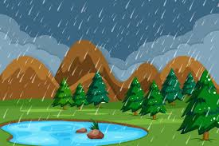

It is a mixture of many gases like nitrogen, oxygen, carbon dioxide and water vapour. It is interesting to note that even the composition of air is the result of life on Earth.The percentage of carbon dioxide in our atmosphere is a mere fraction of a percent because carbon dioxide is ‘fixed’ in two ways: (i) Green plants convert carbon dioxide into glucose in the presence of Sunlight(ii) many marine animals use carbonates dissolved in sea-water to make their shells.


/cdn.vox-cdn.com/uploads/chorus_asset/file/2396538/10-24-14.0.gif)
The atmosphere covering the Earth, like a blanket. We know that air is a bad conductor of heat.The atmosphere keeps the average temperature of the Earth fairly steady during the day and even during the course of the whole year.On the surface of the moon, with no atmosphere, the temperature ranges from –190° C to 110° C.


The relief brought by cool evening breezes after a hot day.All these phenomena are the result of changes that take place in our atmosphere due to the heating of air and the formation of water vapour. The atmosphere can be heated from below by the radiation that is reflected back or re-radiated by the land or water bodies.On being heated, convection currents are set up in the air.


In large parts ofIndia, rains are mostly brought by the south-west or north-east monsoonsSome amount of watervapour also get into the atmosphere becauseof various biological activities. This air alsogets heated.As the air rises, it expands and cools. This cooling causes the water vapour in the air to condense in the form of tiny droplets.This air also gets heated. The hot air rises up carrying the water vapour with it.This condensation of water is facilitated if some particles could act as the ‘nucleus’ for these drops to form around.
